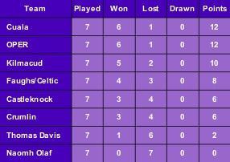

Faughs U14 Camogie
This website is for YOU - teenage girls interested in camogie and other sports. In addition to information on your camogie team matches and results you will find lots of other items of interest.
Did you know that there is a very high drop-out rate from team sport once girls reach their early to mid teens? We're hoping that this website will help to encourage you to stay involved in sport by making you think about the benefits of sport and healthy lifestyles and showcasing positive female role models. We want to promote female sports and give you lots of tips on maintaining an active healthy lifestyle!
See below for information on team fixtures, results and events. Check out our [Gallery] for photos of the club's latest escapades! Interested in learning more about camogie? Well you've come to the right place - check out our tips on [rules] and [skills]. Want to pick up some tips on improving your exercise and nutrition? Click on [Be Healthy]! Want some inspiration to actually put the advice and tips into practice? Try looking at the [Profiles] and [Media pages]!
You can also check out the main [Faughs club website] or make some comments on our [Facebook] page
Table
Events
Fri 7 Sep.
Club Fundraiser: Greyhound Racing at Harolds Cross
Sun 16 Sep.
Trip to Croke Park for All Ireland Camogie Finals
Fixtures
Sat 1 Sep at 2pm.
Championship Away v. Kilmacud
Sat 8 Sep at 2pm.
Championship Home v. Crumlin
Sat 15 Sep at 12 midday.
Championship Home v. OPER
Sat 22 Sep at 12 midday.
Champiosnhip Away v. Cuala
Sat 29 Sep at 12 midday.
Championship semi finals
Sat 6 Oct at 2pm.
Championship finals
Sat 13 Oct at 2pm.
League Away v. Thomas Davis